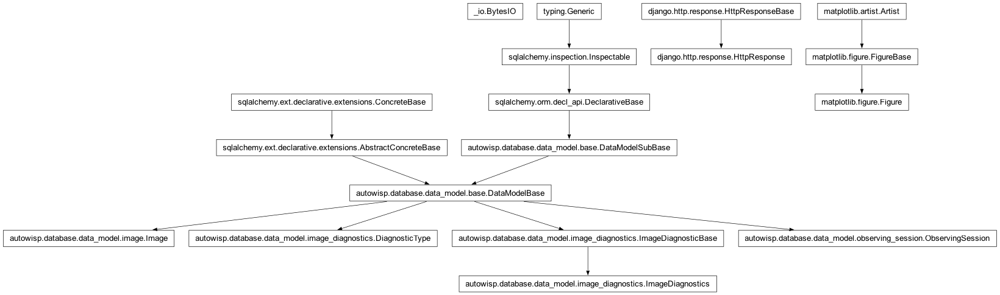

autowisp.browser_interface.diagnostics.image_diagnostics_views module
Class Inheritance Diagram

Views for displaying per-image diagnostics.
- autowisp.browser_interface.diagnostics.image_diagnostics_views.create_figure(num_plots, plot_height_frac, aspect_ratio, num_columns)[source]
Create the figure for the diagnostics plot per given configuration.
- autowisp.browser_interface.diagnostics.image_diagnostics_views.create_image_diagnostics_figure(series_list, *, diagnostic_name, db_session, figure_config=None)[source]
Create a multi-panel figure for the selected image diagnostic series.
- Parameters:
series_list (list) – Series entries (as produced by
get_available_diagnostic_series()) to plot. Only entries whosemarkeris non-empty are plotted.diagnostic_name (str) – The diagnostic type name, or
"quantiles".db_session – An active SQLAlchemy database session.
figure_config (dict) –
Configuration for the layout of the figure. Should define:
- plot_height_frac(float): Height of each subplot row as a
fraction of the available screen area.
num_columns(int): Number of columns in the subplot grid.
- aspect_ratio(float): Width / height of the available screen
area.
By default, height fraction is 1/3, number of columns is 1, and aspect ratio is 5.0.
- Returns:
The completed figure.
- Return type:
matplotlib.figure.Figure
- autowisp.browser_interface.diagnostics.image_diagnostics_views.display_image_diagnostics(request, diagnostic_name)[source]
View displaying the table of available series for an image diagnostic.
- autowisp.browser_interface.diagnostics.image_diagnostics_views.download_plot_view(request, figure_factory, session_key, **url_kwargs)[source]
Return the last-plotted figure as a PDF download.
Reads the plot configuration stored in the session by a previous call to
update_plot_view()and regenerates the figure in PDF format.- Parameters:
request – Django HTTP request.
figure_factory – Same factory used by the corresponding update view.
session_key – Session key where
update_plot_view()stored the last POST data.
- Returns:
HttpResponse with PDF content.
- autowisp.browser_interface.diagnostics.image_diagnostics_views.get_available_diagnostic_series(diagnostic_name, db_session)[source]
Return the observing sessions and channels with data for a diagnostic.
Queries for distinct (observing_session, channel) pairs that have at least one value for the given diagnostic name.
- Parameters:
diagnostic_name (str) – The name of the diagnostic to query (must match a
DiagnosticTyperow).db_session – An active SQLAlchemy database session.
- Returns:
A dictionary with two keys:
diagnostics_fields:A list of column header strings for the extra table columns in the
diagnostics_app.htmltemplate.diagnostics_list:A list of dicts, one per (observing session, channel) pair, each containing the keys
id,color,marker,scale,label, andinfo(a list of values matchingdiagnostics_fields).
- Return type:
- autowisp.browser_interface.diagnostics.image_diagnostics_views.get_available_diagnostics(db_session)[source]
Return the list of diagnostic names that have at least one value.
- autowisp.browser_interface.diagnostics.image_diagnostics_views.get_diagnostic_series_data(series, diagnostic_name, db_session)[source]
Query the JD and diagnostic values for a single series.
- Parameters:
series (dict) – A series entry as produced by
get_available_diagnostic_series().diagnostic_name (str) – The diagnostic type name to query, or
"quantiles"(in which case the quantile name is extracted from the seriesid).db_session – An active SQLAlchemy database session.
- Returns:
(jd_values, diag_values, image_ids)as tuples offloats/ints, ordered by JD. Empty tuples if no data is found.
- Return type:
- autowisp.browser_interface.diagnostics.image_diagnostics_views.group_series_by_jd_overlap(series_data)[source]
Group diagnostic series into sets that share overlapping JD ranges.
Series with the same diagnostic whose JD ranges overlap are grouped together (to be plotted on the same axes). Series with non-overlapping ranges end up in separate groups.
- Parameters:
series_data (list) – A list of
(series, jd_values, diag_values, image_ids)tuples, where jd_values are ordered sequences of Julian dates.- Returns:
- A list of lists, each inner list containing
(series, jd_values, diag_values)tuples that should be plotted on the same axes.
- Return type:
- autowisp.browser_interface.diagnostics.image_diagnostics_views.plot_image_diagnostic_series(axes, time_values, diag_values, image_ids, config)[source]
Plot a single image diagnostic series on the given axes.
- Parameters:
axes – A matplotlib Axes to plot on.
time_values – Sequence of Julian date x-coordinates.
diag_values – Sequence of diagnostic y-coordinates.
config (dict) – Configuration for the plotting usually produce by
get_available_diagnostic_series(). Should contain keyschannel,color,marker,scale, andlabel.
- autowisp.browser_interface.diagnostics.image_diagnostics_views.update_plot_view(request, figure_factory, session_key=None, **url_kwargs)[source]
Common handler for diagnostics AJAX plot-update views.
Parses the JSON POST body, calls
figure_factoryto produce the figure, and returns an SVGJsonResponse.- Parameters:
request – Django HTTP request whose body is a JSON object with a
datasetsdict (keyed by series id) and an optionalfigure_configdict.figure_factory – Callable accepting
series_list,db_session,figure_config, plus any URL kwargs as keyword arguments.session_key – If given, the raw POST data is stored in the session under this key so a download view can retrieve it.
- Returns:
JsonResponse with
plot_datacontaining the SVG string.